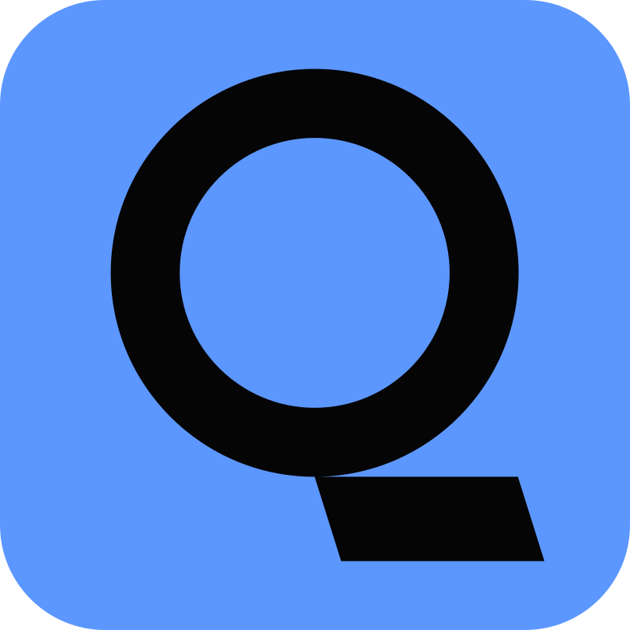

Google est le plus connu de tous, inclus avec Chrome, il encaisse plus de 750 millions dútilisateur, ce qui en fait le navigateur le plus utilisé dans le monde ! (source : conférence Google I/O)
Google offre gratuitememt de nombreux logiciels et services, Gmail, Youtube, Google Drive sont toutes sous possession de Google
Le second plus navigateur le plus utilisé est Bing, inclus avec Microsoft Edge, encaisse plus de 90 millions d'utilisateur (différence considérable par rapport a Google !)
Le moteur de recherche promet un bonne gestion des données et cookies utilisateurs, liées à la vie privée.
Mais le moteur Bing est surtout connu par Microsoft, et son marketing gargantuesque.
Il y a aussi d'autres moteurs de recherche moins connus, certain comme DuckDuckGo, Qwant, Ecosia, Yahoo!
DuckDuckGo promet une protection des données personnelles

Qwant se penche plus pour être un moteur destiné pour les plus jeunes, avec bloquage de traqueurs, protection de données utilisateurs etc..

Ecosia plante un arbre à chaque recherche (pratique pour l'écologie!)
Et Yahoo! est un navigateur internet créé en janvier 1994, mais beaucoup moins connus de ces jours